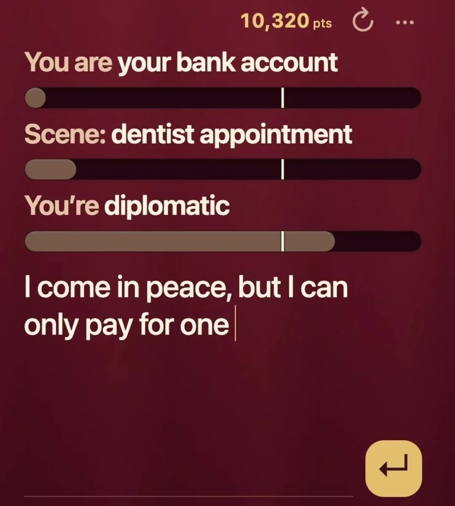
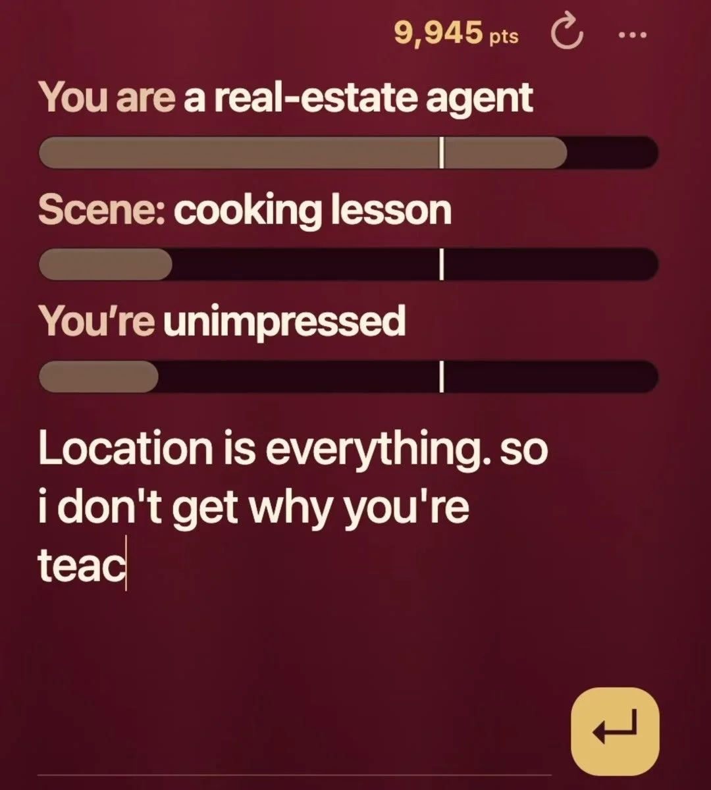

体験
入力の途中でも、バーが反応するように見える。打鍵ごとに再評価されるなら、プレイヤーはセリフを調整しながら、基準を満たす方向を探れる。低い代償で繰り返せるゲームなので、採点の粗さも許容されやすい。
- 3つのお題を別々のバーにして、総合点ではなく、どのお題に応えているかを示す。
- Skipで、詰まったときに次のお題へ進める。
- 業務ツールの多くが「間違いを避ける」設計なのに対し、ここでは楽しさと反応の速さが目的で、判断の外れが問題にならない。
- バーの意味、得点の増減の規則、Coherenceのメーターの扱いは、掲載した2枚からは確認できない。
キャプチャ
{kind=link}

（原寸の画像を開く）{kind=link}

（原寸の画像を開く）見る箇所3行のお題とそれぞれの下のバー、入力中のセリフ、上部の得点表示
入力から画面の変化まで
-
判断への入力
3つのお題（役、場面、態度。例:「You are your bank account」「Scene: dentist appointment」「You're diplomatic」）と、プレイヤーが入力中のセリフ。TypeとSpeakで入力方法を選べ、Skipで飛ばせる。
-
Jevの判断
入力したセリフが、それぞれのお題にどれだけ合うかを採点していると見られる。バーの縦線は目標やしきい値の位置に見える。判断の質問は画面に出ていない。
-
結果がUIをどう変えるか
お題ごとのバーがセリフに応じて伸び縮みし、上部に得点（10,320、9,945）が出る。1枚目と2枚目でお題が違うので、ラウンドが変わっている。
- 判断型の見立て
- Score推定
- お題ごとのバーで達成度を見せる構成からの見立て。質問の文と型は画面から確認できない。
Jevとの適合
入力に素早く反応する採点は、Jevの低遅延に合う。ただし、基準の質問が公開されていないので、Jevが何を判断しているのかは、動画からは推定にとどまる。
確認範囲と未確認事項
作者の投稿動画から静止画を確認。Val Town上のリミックスできるプロジェクトを基にした作品と表示される。動画に映る人物とロゴは掲載フレームから除き、ゲーム部分のみを切り出した。採点基準の質問文と型は、画面から確認できない。
- 確認済み動画から得た2枚の静止画に見えるお題、バー、入力中のセリフ、得点、TypeとSpeakとSkipの操作
- 未検証採点の質問と型、バーと得点の関係、プレイ可能なベースの動作（作者が示すURLは未アクセス）、笑いの質など主観的な評価
- 推定扱いバーが打鍵ごとに再評価されていること、縦線の意味、質問型（Scoreと見立て）
- 引用X投稿は2026-09-18（UTC）。動画からゲーム部分のみ切り出して引用（人物とロゴは除外）。権利は作者に帰属する